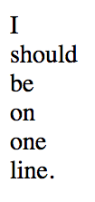
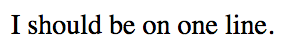

Today we practiced building our own sites from scratch.
Rewatch the video on inline-block:
We created a horizontal list by adding the following CSS for each list item in the navbar:
display: inline-block;
Then, complete the exercises below. Use the inline block technique to lay out all the items horizontally instead of vertically on each page. For example, in the first exercise:

should look like:

Don't edit the HTML on each page, just change the CSS. You might need to adjust the size of the output tab or blow out the page into a new tab by click the black arrow